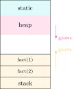

Model
- Static area: code, global and
staticvariables; fixed size, lives for the whole run. - Stack: every call pushes an activation record (frame) with parameters, local variables and the return address; the return pops it. Allocation is a pointer increment, lifetime is the call.
- Heap: memory requested at run time (
newin C++ and Java,mallocin C). Lifetime is decided by the program (delete) or by a garbage collector (Java).
Recursion works because every call has its own frame:  nested calls of
nested calls of fact keep copies of n on the stack.
Picture

Stack and heap grow towards each other in the free space between them.
Example
int fact(int n) { return n <= 1 ? 1 : n * fact(n - 1); } // one frame per call
int* make() { int* p = new int(42); return p; } // *p survives the call
// dangling: x died with the frame
int* bad() { int x = 42; return &x; }Intuition
The stack is a pile of notepads, one per unfinished call; the heap is a warehouse where you keep what must outlive the notepad.
Pitfall
Deep recursion overflows the stack (StackOverflowError in Java, a crash in C++). A pointer or reference to a local variable outlives its frame and points to garbage.